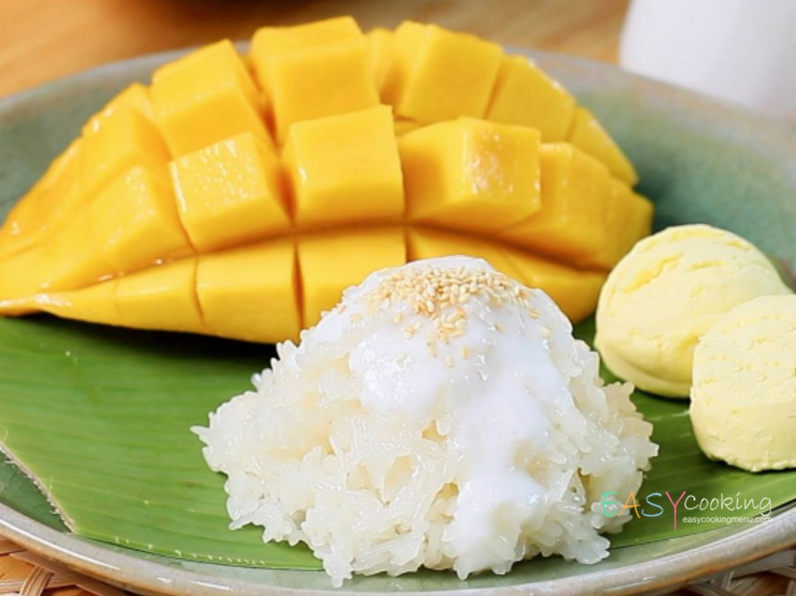
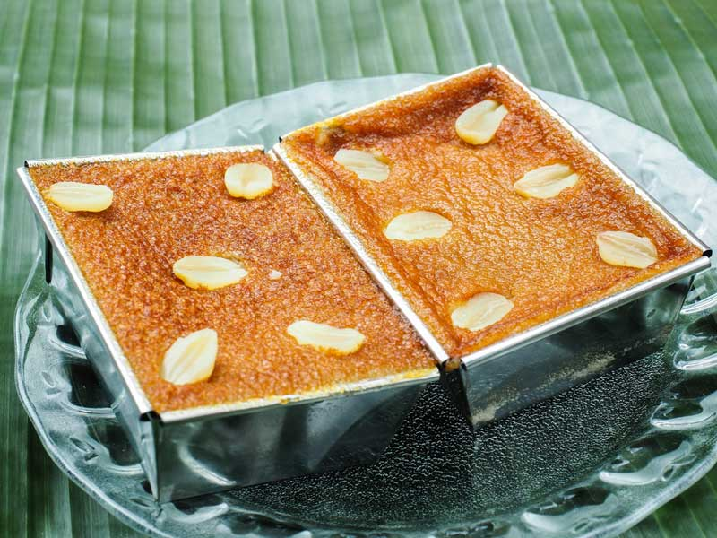
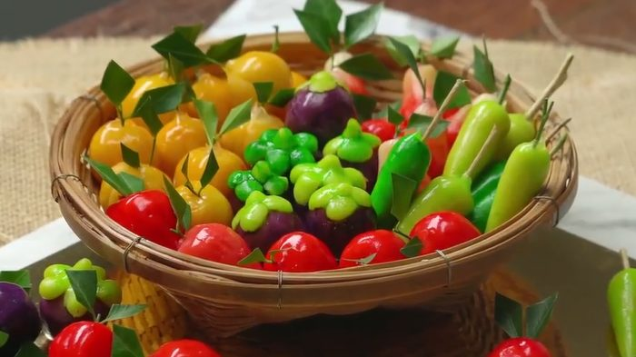
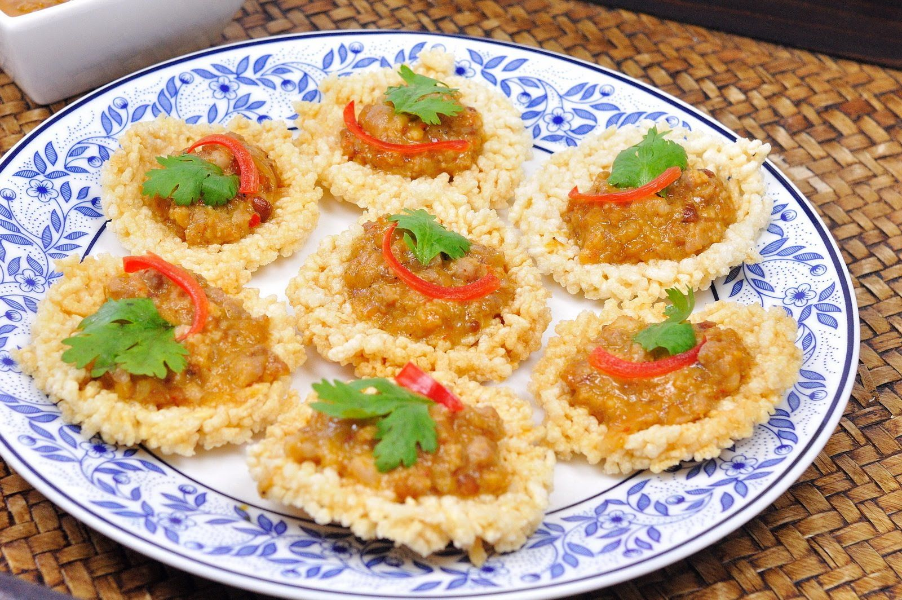
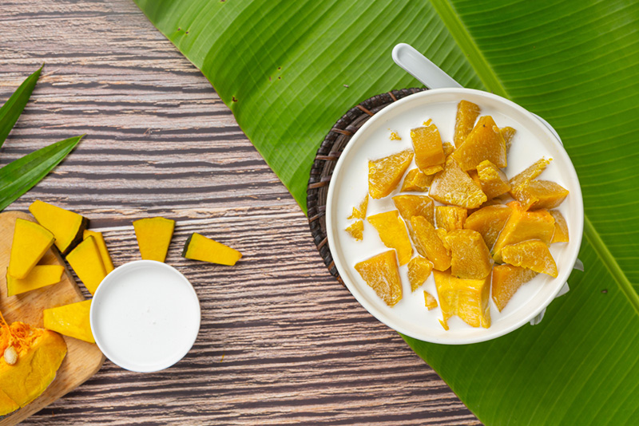

1.) ข้าวเหนียวมูล
ส่วนผสม
- ข้าวเหนียว 1 กิโลกรัม
- หัวกะทิ 450 กรัม
- เกลือป่น 3/4 ช้อนชา
- น้ำตาลทราย 550 กรัม
- ใบเตย 3-5 ใบ
- ถั่วทอง 5 ช้อนโต๊ะ
- น้ำใบเตย, น้ำแครอท, น้ำดอกอัญชัญหรือสีผสมอาหารตามชอบ
วิธีทำ
- นำข้าวเหนียวไปล้างทำความสะอาดและแช่น้ำทิ้งไว้ 1 คืน จากนั้นนำไปสะเด็ดน้ำ (กรณีต้องการทำข้าเหนียวที่มีสีต่างๆ ก็ให้ใส่สีลงไปในน้ำที่แช่ค้างคืนไว้ด้วย)
- นำผ้าขาวบางรองไว้ในซึ้งหรือหม้อนึ่ง แล้วจึงนำข้างเหนียววางลงบนผ้าขาวบาง จากนั้นนำไปนึ่งจนข้าว เหนียวสุก
- ในหม้อขนาดเล็ก ใส่น้ำตาล, เกลือป่น (3/4 ช้อนชา) และหัวกะทิ และนำไปตั้งบนไฟอ่อนๆ คนจนส่วนผสมทั้งหมดเข้ากันดี จากนั้นจึงใส่ใบเตยลงไป ทิ้งไว้สักพักจึงปิดไฟ
- ในชามขนาดกลาง ใส่ข้าวเหนียวที่นึ่งไว้จนสุกดีแล้วลงไป จากนั้นจึงใส่น้ำกะทิที่เคี่ยวไว้ในขั้นตอนที่สามตามลงไป คนจนส่วนผสมเข้ากันทั่ว และทิ้งไว้อย่างน้อย 15 นาที ก็สามารถนำไปเสริฟได้ (เวลาเสริฟอาจโรยหน้าด้วยถั่วทอง) * หมายเหตุ : ข้าวเหนียวมูนสามารถนำไปทานกับ มะม่วงสุก หรือทานกับสังขยา, หรือทานเป็นข้าวเหนียวมูนหน้ากุ้ง + หน้าปลาแห้งและอื่นๆ
2.) ขนมหม้อแกง
ส่วนผสม
- เผือกนึ่งสุกหรือถั่วเขียวผ่าซีกนึ่งแล้วบดให้ละเอียด 1 ถ้วยตวง
- ไข่เป็ด 5 ฟอง
- มะพร้าวขูด 1 1/2 ถ้วยตวง
- น้ำตาลปีบ 1/2 ถ้วยตวง
- หอมเจียวสีเหลือง
- น้ำมันมะพร้าวหรือน้ำมันพืช
วิธีทำ
- นึ่งเผือกทั้งเปลือกหรือถั่วเขียวผ่าซีกให้สุกปอกเปลือกเผือก แล้วบดให้ละเอียดอย่าให้เป็นเม็ด
- ผสมไข่ น้ำตาล มะพร้าว ให้เข้ากัน กรองด้วยผ้าขาวบาง
- ผสมเผือกหรือถั่วเขียวกับน้ำกะทิ ในข้อ 2 ค่อย ๆ ผสมทีละน้อย จนเผือกหรือถั่วเขียวละลายเข้าเป็นเนื้อเดียวกัน เอาขึ้นตั้งไฟกลาง ๆ คนพอขนมข้นและแข็งตัว
- ทาน้ำมันในถาดสำหรับปิ้งแล้วนำขนมใส่ลงในถาด นำเข้าเตาอบหรือผิงไฟล่าง ไฟบน แล้วแต่สะดวก
3.) ขนมลูกชุบ
ส่วนผสม
- ถั่วเขียวนึ่งสุกบดละเอียด 1 กิโลกรัม, น้ำตาลทราย 2 1/2 ถ้วยตวง, หัวกะทิ (มะพร้าว 400 กรัม) 1 ถ้วยตวง, สีผสมอาหารสีต่างๆ
ส่วนที่ชุบ
- วุ้นผง 1 1/2 ช้อนโต๊ะ, น้ำ 2 1 /2 ถ้วยตวง, น้ำตาลทราย 1 ถ้วยตวง
วิธีทำ
- ผสมถั่วบด น้ำตาลทราย กะทิ เข้าด้วยกัน ยกขึ้นตั้งไฟ
- กวนด้วยไฟอ่อนๆ จนล่อนจับกันไม่ติดกระทะ
- พักถั่วกวนไว้ให้เย็น นำมาปั้นเป็นรูปผลไม้ต่างๆตามต้องการ เสียบไม้ไว้
- ใช้พู่กันจุ่มสีระบายลงบนขนมที่ปั้น โดยระบายเลียนแบบของจริง ทิ้งไว้ให้แห้งจึงนำไปชุบวุ้น
- ผสมวุ้นกับน้ำยกขึ้นตั้งไฟ ให้ละลายก่อนจึงใส่น้ำตาลทราย เคี่ยววุ้นจนข้น
- เอาขนมที่ปั้นแล้วเสียบไม้ ลงชุบวุ้นครั้งเดียวให้ทั่ว ทิ้งไว้จนแห้งแล้วชุบอีก ทำเช่นนี้ประมาณ 3- 4 ครั้ง จะชุบแต่ละครั้งต้องให้เย็น วุ้นแข็งตัวก่อนทุกครั้ง
- เมื่อวุ้นแข็งจึงเอาไม้เสียบออก ตกแต่งด้วยก้านและใบให้สวยงาม
4.) ข้าวตังหน้าตั้ง
ส่วนผสม
- ข้าวตัง 1/2 กก.
- น้ำมันสำหรับทอด
ส่วนผสมน้ำจิ้ม
- 1.เนื้อหมูสับละเอียด 1 ถ้วย
- กุ้งสับละเอียด 1 ถ้วย
- กระเทียมซอย 1/2 ถ้วย
- หอมแดงซอย 1/2 ถ้วย
- กะทิ 2 ถ้วย
- น้ำปลา 2 ช้อนโต๊ะ
- น้ำมะขาม 1 ช้อนโต๊ะ
- น้ำตาลปี๊บ 2 ช้อนโต๊ะ
- น้ำมันน้ำพริกเผา 1 ช้อนโต๊ะ
วิธีทำ
- นำข้าวตัง ทอดกับน้ำมันจนสุกกรอบ พักให้สะเด็ดน้ำมัน/li>
- นำกะทิตั้งไฟพอเดือดแล้วเคี่ยวให้แตกมันเล็กน้อย แล้วใส่เนื้อสัตว์ ผัดพอสุก
- ใส่ส่วนผสมอื่นๆ ลงตามปรุงรส รสชาติจะออกเปรี้ยว หวาน เค็ม
- จากนั้นจึงแต่งหน้าด้วยน้ำมันพริกเผาเล็กน้อย ทอดข้าวตังให้สุกเหลืองกรอบ เสิร์ฟคู่กัน
5.) ฟักทองบวด
ส่วนผสม
- ฟักทองหั่นเป็นชิ้นพอดีคำ 2 ถ้วยตวง
- น้ำเปล่า 2 1/2 ถ้วยตวง
- หัวกะทิ 1 ถ้วยตวง
- หางกะทิ 1 ถ้วยตวง
- ใบเตย 2 ใบ
- น้ำตาลทราย 40 กรัม
- น้ำตาลปี๊บ 40 กรัม
- เกลือป่น 1/4 ช้อนชา
วิธีทำ
- ทำความสะอาดและหั่นฟักทองเป็นชิ้นพอดีคำ เพื่อความสวยงามไม่ต้องปอกเปลือกออก
- นำหางกะทิ, ใบเตย, น้ำตาลทรายและน้ำตาลปี๊บใส่ลงไปในหม้อ และนำไปตั้งบนไฟร้อนปานกลางจนเดือด
- ใส่ฟักทองที่หั่นไว้แล้วลงไป ต้มต่อไปจนฟักทองสุกและนุ่ม (ใช้เวลาประมาณ 10 นาที)
- ใส่หัวกะทิและเกลือลงไป ต้มต่อจนเืดือดอีกครั้งจึงปิดไฟ
- ตักใส่ถ้วย สามารถเสริฟทันทีขณะร้อน หรือปล่อยไว้ให้เย็นแล้วค่อยเสริฟเป็นอาหารว่างในวันสบายๆ